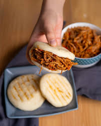

Home
Arepa

An arepa is a round, flat bread made from ground corn that is grilled, baked, or fried. It is a staple food
in Colombia and Venezuela and is versatile, enjoyed in different ways like a side dish or a stuffed
sandwich. Simple arepas can be eaten plain with cheese or butter, while more elaborate versions are sliced
open and filled with various ingredients like shredded meats, beans, and vegetables.
To make traditional arepas, you combine pre-cooked white cornmeal (known as masarepa, such as the P.A.N.
brand), warm water, and salt to form a soft, smooth dough. The patties are then cooked on a griddle or
skillet until golden brown on the outside and soft inside.
Ingredients
- 2 cups pre-cooked white or yellow cornmeal (masarepa)
- 2 ½ cups warm water
- 1 tsp salt (adjust to taste)
- 1 tbsp vegetable oil or butter for cooking
Instructions
- Prepare the dough: In a large bowl, dissolve the salt in the warm water. Slowly
add the pre-cooked cornmeal, mixing constantly with your hands or a spoon. Continue mixing until
the ingredients are well combined and a soft, slightly moist dough forms with no lumps.
- Rest the dough: Cover the bowl and let the dough rest for about 5 to 10 minutes.
This allows the cornmeal to hydrate properly. The final dough should be smooth and malleable,
not sticky or crumbly. If the edges crack when you shape it, add a little more water; if it's too wet,
add a little more cornmeal.
- Form the arepas: Divide the dough into 8 equal portions. Lightly grease your hands
with a little oil or water, then roll each portion into a ball. Flatten the balls into discs about
½ inch thick and 3.5 to 4 inches wide. Smooth the edges with your fingers.
- Cook the arepas: Heat a large non-stick pan or griddle over medium heat and brush
lightly with oil or butter. Place the arepas in the pan (in batches, if necessary) and cook for
approximately 5-7 minutes on each side, or until they are golden brown and a crispy crust forms.
- Serve: Once cooked, slice the warm arepas open horizontally (like a pita pocket)
and fill them with your favorite ingredients.
Popular Fillings
Arepas are versatile and can be filled with a variety of ingredients:
- Reina Pepiada: Shredded chicken mixed with mashed avocado and mayonnaise.
- Pabellón: Shredded beef, black beans, and plantains.
- Simple options: Scrambled eggs, various cheeses (queso fresco, mozzarella),
ham, or butter.
Take me back